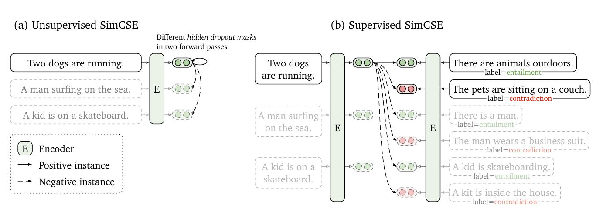

PAPER NOTE · REPRESENTATION LEARNING
SimCSE: Simple Contrastive Learning of Sentence Embeddings
SimCSE：簡單對比式句向量學習
核心價值：提出一種簡單卻有效的對比學習框架 SimCSE，利用預訓練語言模型的 Dropout 作為自然的資料增強，大幅提升無監督與有監督句向量 (Sentence Embeddings) 的表現。
主要貢獻：
- 設計無監督對比學習方法：將同一個句子通過帶有 Dropout 的 Transformer 兩次，視為正樣本對。
- 指出預訓練語言模型的空間分佈存在「坍塌（Alignment & Uniformity）」問題，並展示對比學習能有效校正此現象。
- 在多個 Semantic Textual Similarity (STS) 任務上達到當時的 SOTA，超越許多複雜的資料增強方法。
研究痛點：以往直接從 BERT 等預訓練語言模型抽取句向量（例如直接取 [CLS] 或平均 pooling）的效果往往很差，甚至不如 GloVe 詞向量平均。過去方法依賴刪除單詞、同義詞替換等複雜資料增強，但這些操作容易破壞語義。
核心洞察 (Key Insight)：預訓練 Transformer 內建的 Dropout 本身就是一種自然的微擾動。不需要改動架構，只要將同一個句子輸入模型兩次，透過不同的 Dropout 遮罩即可產生兩個正樣本表示。
無監督 SimCSE：
- 給定輸入句 x，將它送入編碼器兩次，得到兩個不同的向量表示 hi 與 hi′；Dropout 的隨機遮罩使兩次表示產生差異。
- 使用 InfoNCE 對比損失，拉近同一句子的兩個 Dropout 視角，並推遠不同句子的向量。
有監督 SimCSE：在有自然語言推論 (NLI) 資料集時，將 Entailment（蘊含）作為正樣本，Contradiction（矛盾）作為 hard negative（困難負樣本）加入對比學習。

提示詞模板 (Prompt & Formatting)：筆記補充指出，在輸入句子前後加上簡單提示詞模板（例如 This sentence: {}），能為句向量提供額外語義引導，進一步提升模型在多項檢索任務上的表現。
評估基準：7 個標準 Semantic Textual Similarity (STS) 任務，涵蓋 STS-12 至 STS-18。
關鍵發現：
- 無監督設定下，SimCSE 在 STS 任務的平均表現較以往方法提升 2–4 個百分點（Spearman's correlation）。
- 實驗顯示對比學習能改善句向量分佈的 Alignment（對齊性）與 Uniformity（均勻性）。
侷限性：方法依賴強大的基礎預訓練模型（如 RoBERTa / BERT）；若基底模型表現不足，效果也會受限。此外，對比學習對 batch size 大小具有一定依賴性。
未來方向：探索將此類簡單高效的表示學習方法擴展到多語言模型，或結合大型語言模型 (LLM) 的內嵌表示。
研究省思： 這篇論文給我的最大啟發是——「最厲害的方法往往最簡單」。大家都在絞盡腦汁想怎麼做複雜的資料增強（Data Augmentation），結果作者回頭審視模型本身的 Dropout，就挖出了金礦。做 Research 時不要總覺得非得搞得很複雜才行。
🚀 最新補充： 這種利用內部 Dropout 作為微擾動的想法，其實也啟發了後續許多大型語言模型在微調時的抗過擬合策略。